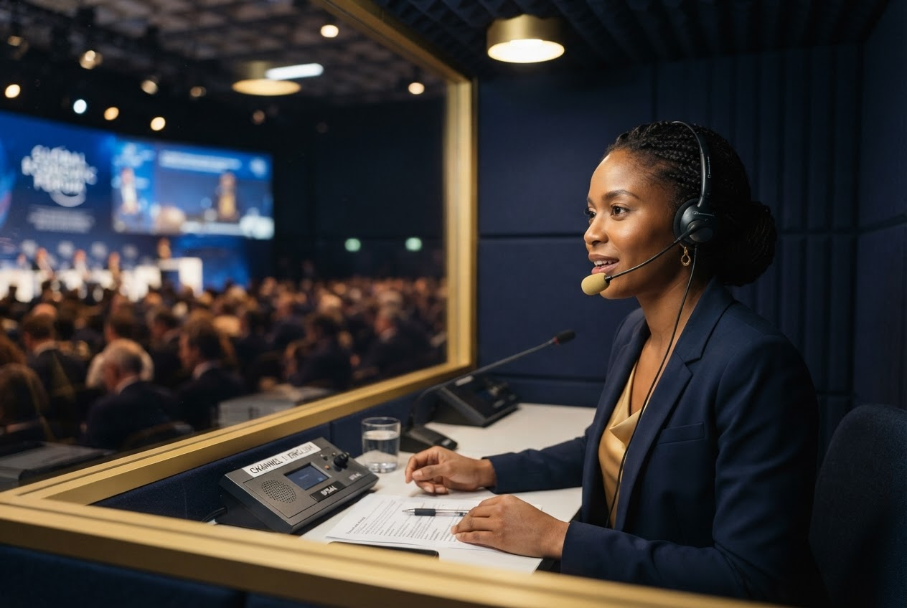
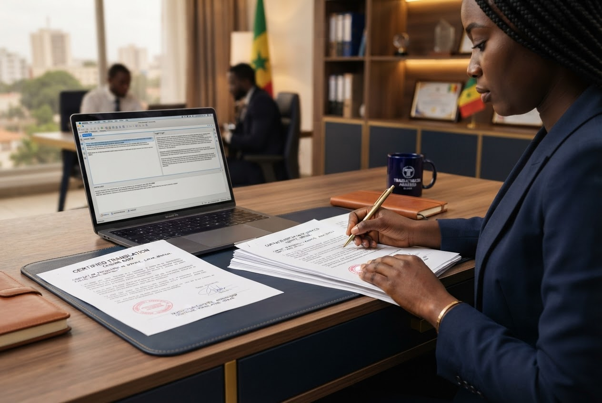

Dakar · Ouakam · Senegal · International
Clear communication builds connections. Your missions move forward.
We help companies and international teams communicate with confidence and organise their assignments in Senegal through interpretation, translation and local coordination.
FrenchEnglishWolofDakar & Senegal

Professional interpretation
Consecutive and simultaneous interpretation for meetings, conferences, official missions and negotiations.

Professional translation
Professional, legal, technical and commercial documents, with language combinations including French, English and Wolof.

Mission logistics
Transport, accommodation and GPS installation to support teams during assignments in Dakar and elsewhere in Senegal.
For international teams
A local point of contact for communication and practical coordination during missions in Senegal.